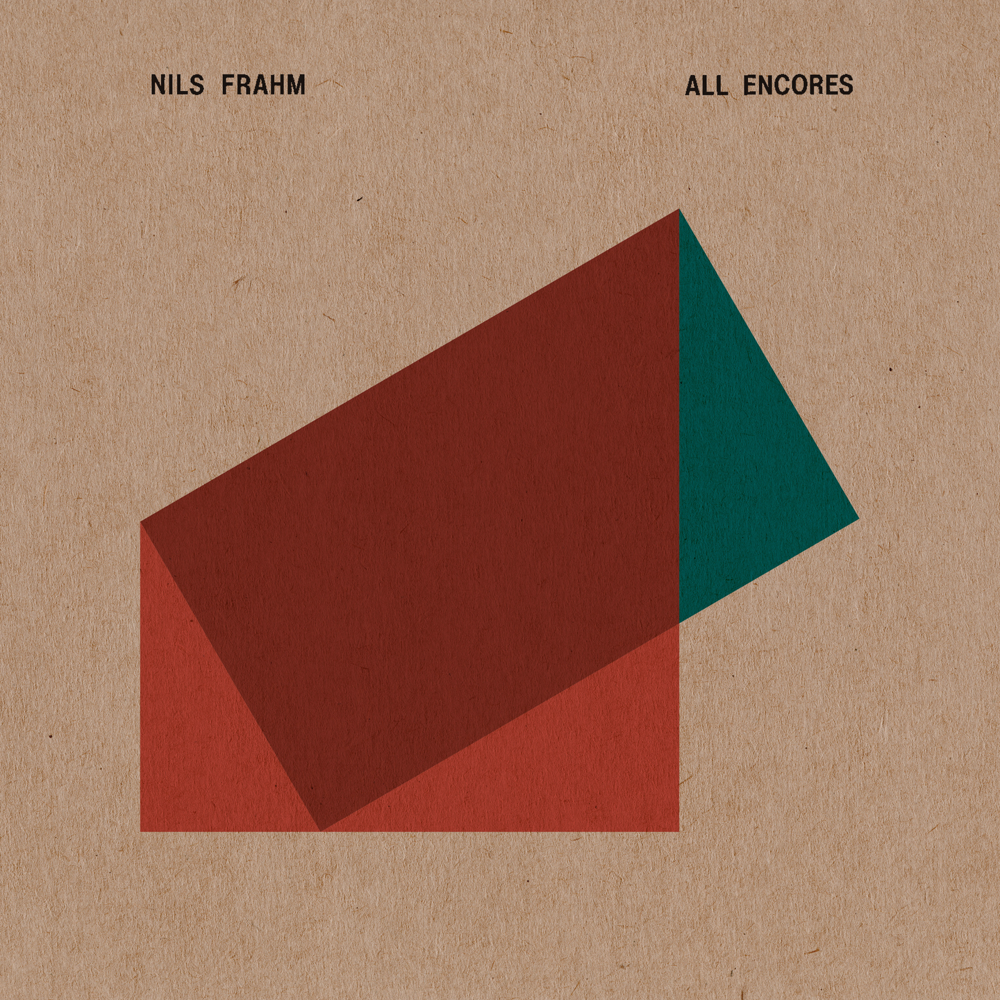
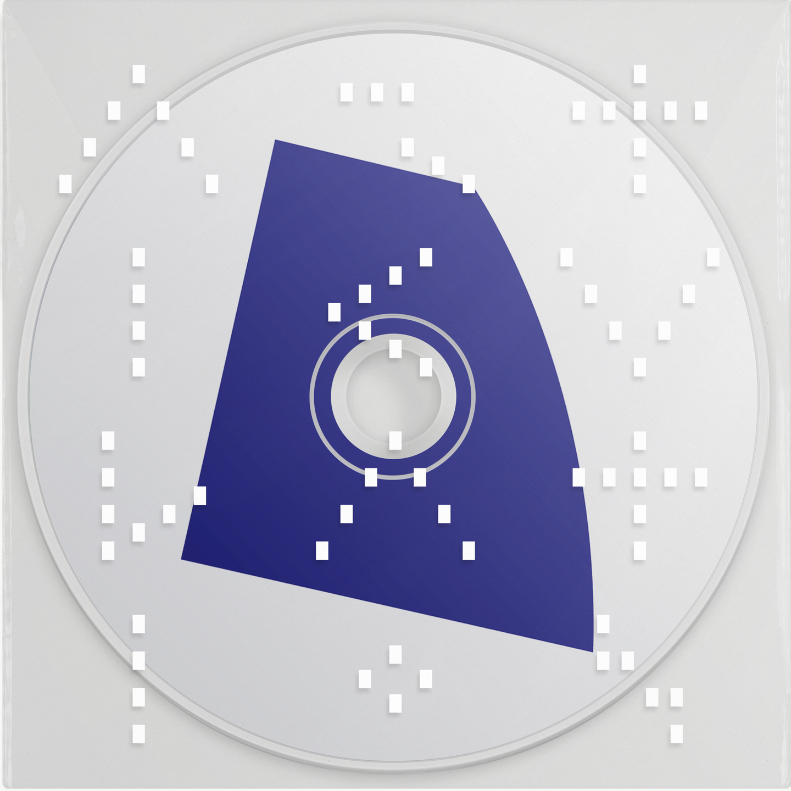

Erased Tapes:
Exploring the Sonic Frontier
Erased Tapes Records is a truly independent record label based in London. Founded by Robert Raths in 2007, it has become a home for avant-garde music that transcends genres.
The Label's Vision
The label has nurtured a unique family of artists including Ólafur Arnalds, Nils Frahm, and A Winged Victory for the Sullen. Their focus remains on the sonic frontier of modern classical and electronic music.
By blending acoustic instruments with electronic textures, Erased Tapes has defined a new era of atmospheric soundscapes that resonate globally.
Every release is a testament to the label's dedication to craft, from the meticulous mastering to the iconic aesthetic of their physical media.


